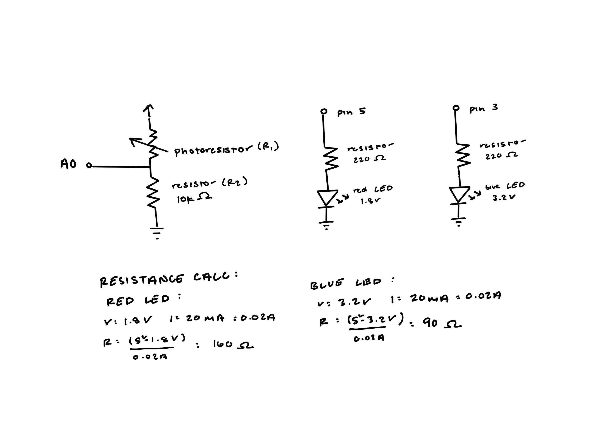
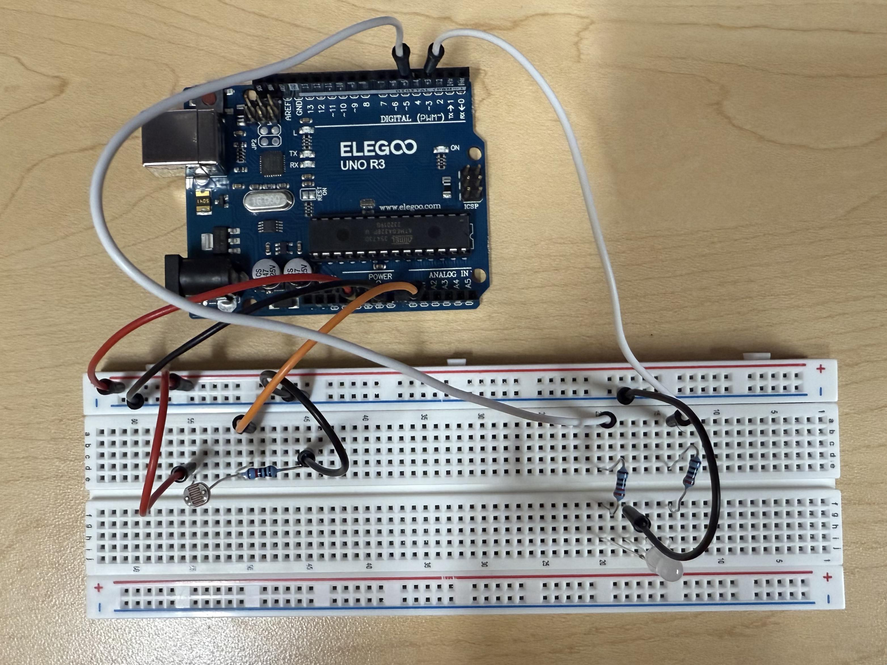
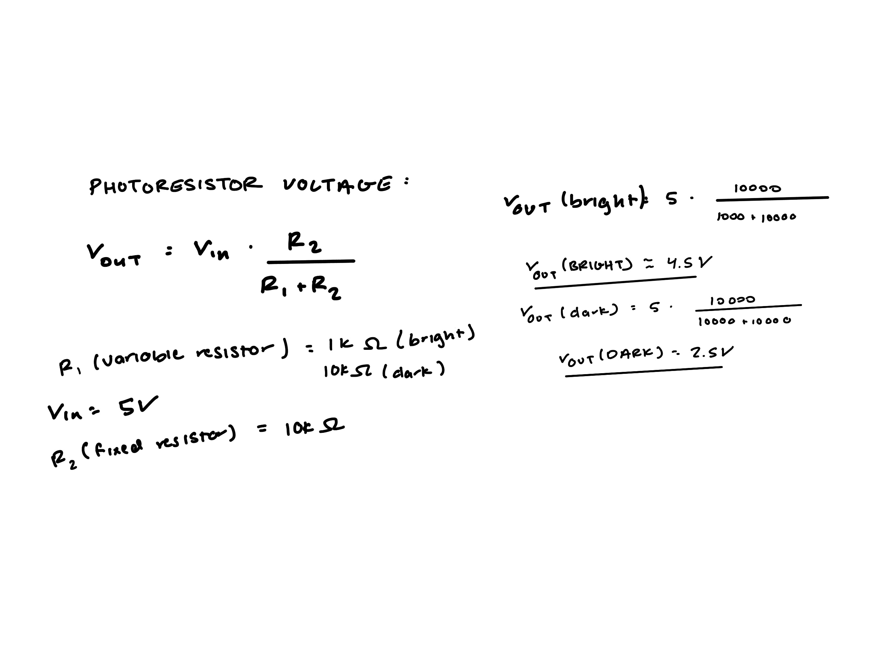
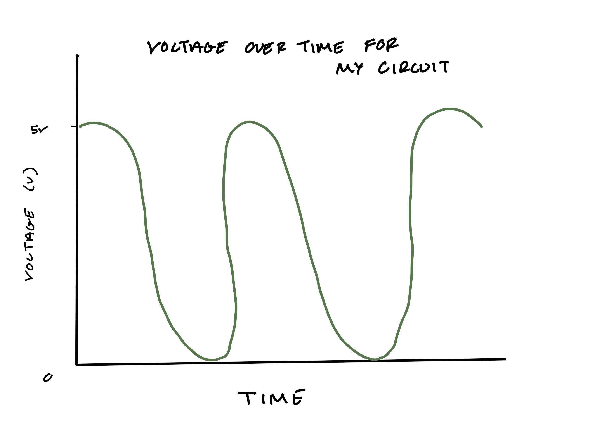

For my A3 circuit operation, the photoresistor acts as a variable resistor that changes resistance based on light levels. When the photoresistor is exposed to more light, its resistance decreases, causing the blue LED to brighten and the red LED to dim.

To achieve the desired behavior, the variable resistor was used as R1 in the circuit. I then used a 10k resistor for R2 to create a voltage divider with the photoresistor. This setup allows the analog input to read varying voltage levels based on the resistance of the photoresistor, which in turn controls the brightness of the LEDs.

The physical circuit ensures that all components are properly connected as per the schematic.
Calibration
Demonstrates one technique for calibrating sensor input. The sensor readings
during the first five seconds of the sketch execution define the minimum and
maximum of expected values attached to the sensor pin.
The sensor minimum and maximum initial values may seem backwards. Initially,
you set the minimum high and listen for anything lower, saving it as the new
minimum. Likewise, you set the maximum low and listen for anything higher as
the new maximum.
The circuit:
- analog sensor (potentiometer will do) attached to analog input 0
- LED attached from digital pin 9 to ground through 220 ohm resistor
created 29 Oct 2008
by David A Mellis
modified 30 Aug 2011
by Tom Igoe
modified 07 Apr 2017
by Zachary J. Fields
This example code is in the public domain.
https://docs.arduino.cc/built-in-examples/analog/Calibration/
*/
const int sensorPin = A0; //sensor connects to pin A0
const int redPin = 5; //red LED connects to pin 5
const int bluePin = 3; //blue LED connects to
int sensorValue = 0; // the sensor value
int sensorMin = 1023; // minimum sensor value
int sensorMax = 0; // maximum sensor value
void setup() {
pinMode(redPin, OUTPUT); //intializies red LED as an output
pinMode(bluePin, OUTPUT); //intializes blue LED as an output
pinMode(13, OUTPUT); //intlializes pin 13 LED as an output
Serial.begin(9600); //establishes serial comunication
Serial.println("Callibrating sensor for my five seconds; change from light to dark"); //prints out callibration message
digitalWrite(13, HIGH); //turns on pin 13 LED to indicate the start of callibration
while (millis() < 5000) { //calibrate during the first five seconds
sensorValue = analogRead(sensorPin); //sensor value is set to sensor current reading
if (sensorValue > sensorMax) { //checks if current sensor value is greater than saved max value
sensorMax = sensorValue; //changes max value if true
}
if (sensorValue < sensorMin) { //checks if current sensor value is less than saved min value
sensorMin = sensorValue; //changes min value if true
}
}
digitalWrite(13, LOW); //turns off pin 13 LED to indicate the end of callibration
//prints out end of callibration and min and max sensor values
Serial.print("Calibration complete. Min: ");
Serial.print(sensorMin);
Serial.print("\t Max: ");
Serial.println(sensorMax);
}
void loop() {
sensorValue = analogRead(sensorPin); //read the sensor:
sensorValue = constrain(sensorValue, sensorMin, sensorMax); //in case the sensor value is outside the range seen during calibration
int brightness = map(sensorValue, sensorMin, sensorMax, 0, 255); //apply the calibration to the sensor reading
if (brightness > 127) { //checks to see if brightness is higer than the treshold
analogWrite(redPin, 255 - brightness); //red LED dims
analogWrite(bluePin, brightness); //blue LED brightens
} else { //if brightness is lower than the treshold
analogWrite(redPin, 255 - brightness); //red LED brightens
analogWrite(bluePin, brightness); //blue LED dims
}
//prints readings to Serial Monitor for debugging
Serial.print("Sensor: ");
Serial.print(sensorValue);
Serial.print("\t Brightness: ");
Serial.print(brightness);
Serial.print("\t Red: ");
Serial.print(255 - brightness);
Serial.print("\t Blue: ");
Serial.println(brightness);
delay(100); //delay for stable readings
}
1. For my circuit specifically, I needed the variable resistor to be R1 in order to get the desired outcome; when the photoresistor is uncovered, less resistance, the blue LED becomes brighter, and when it is covered, more resistance, the red LED dims.

2.
3. With analogWrite() and analogRead() being respctively 8-bit and 10-bit values, a map function would look like this: map(0, 1023, 0, 255). If it is increased to 10-bit and 16-bit values, it would look like this: map(0, 1023, 0, 65535). That would then lead my map function in my code to be map(sensorValue, sensorMin, sensorMax, 1023). I would still be calibrating the min and max sensor values the same way, but the brightness values would be higher resolution, allowing smoother LED transitions.